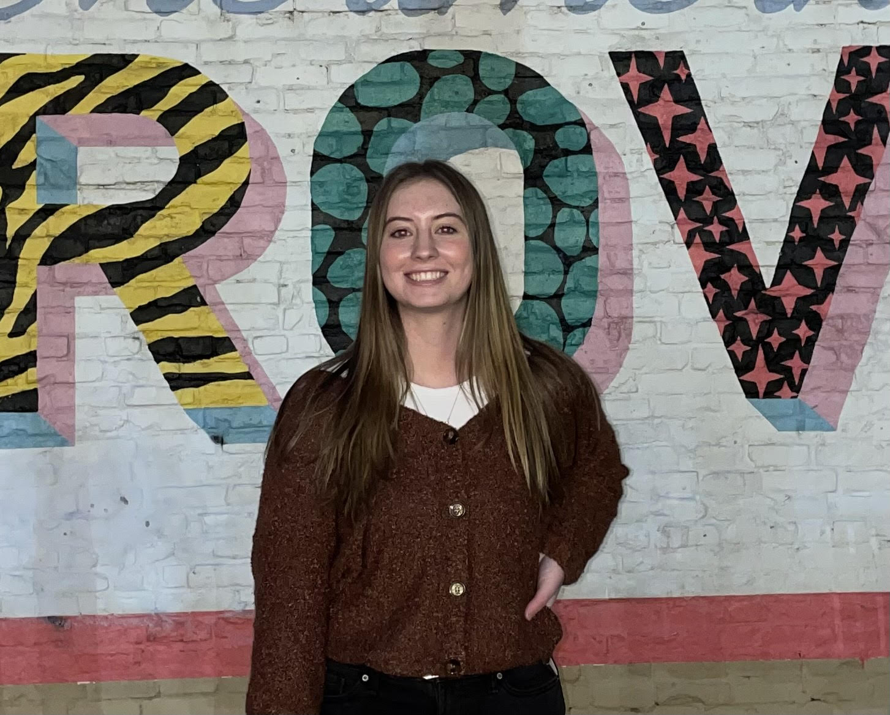

Home
|
Resume
|
Tableau
|
Video
Ashlynn Hall
(509) 367-0936 | ashlynnhall17@gmail.com | www.linkedin.com/in/ashlynn-e-hall

EDUCATION
Brigham Young University - Provo
Jan 2023 – Present
Pre-Marketing
GPA 3.95/4.00
Brigham Young University - Idaho
Sep 2020 – Apr 2021
Pre-Business
GPA 3.95/4.00
Yakima Valley College
Sep 2018 – Jun 2020
Earned an Associate of General Studies
GPA 3.85/4.00
EXPERIENCE
BYU Exercise & Wellness Center - Office Specialist
Enhance customer satisfaction by consulting inquiring students and professors about programs
Insure project success through organization of financial documents
Aggrandize organization by maintaining actualized records
Target - Guest Advocate
Held many customer interactions at checkout and return services
Managed employee scheduling and gave trainings to newer employees
Collected and distributed money to and from Cash Registers
`
Selah Parks and Recreation - Referee, Supervisor, Coach
Refereed youth soccer and basketball
Promoted to Supervisor; opened and closed facilities and talked to unpleased parents
Coached a soccer team for kids ages 4-6
SERVICE
Church Mission - Voluntary Representative
Columbia South Caronlina - Chile Santiago South
Mastered fluency in Spanish language including vocabulary, verbs, and tenses
Executed trainings on teaching, planning, goal setting, and leadership
Upheld a weekly schedule of 80+ hours for a year and a half
PERSONAL
Varsity lettered in Soccer, Basketball and Tennis
Received a Women's Athlete of the Year scholarship
Graduated Top 10% of Senior class
Back to Top